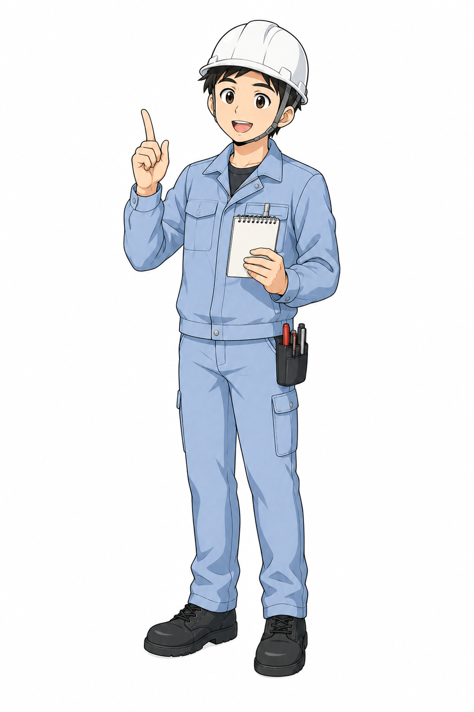
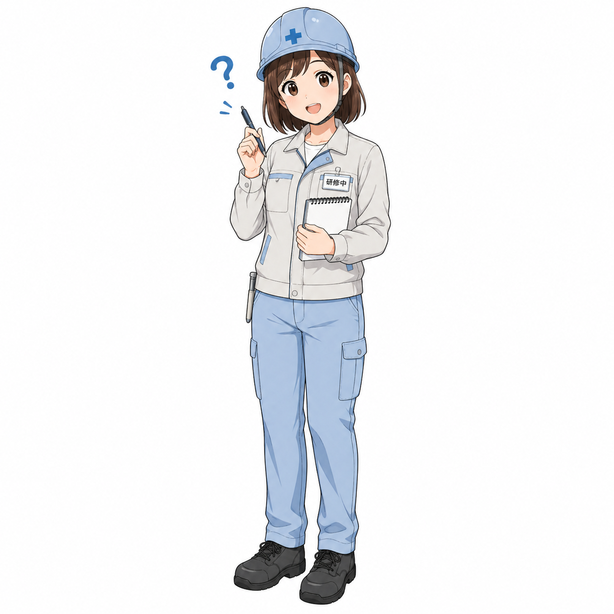
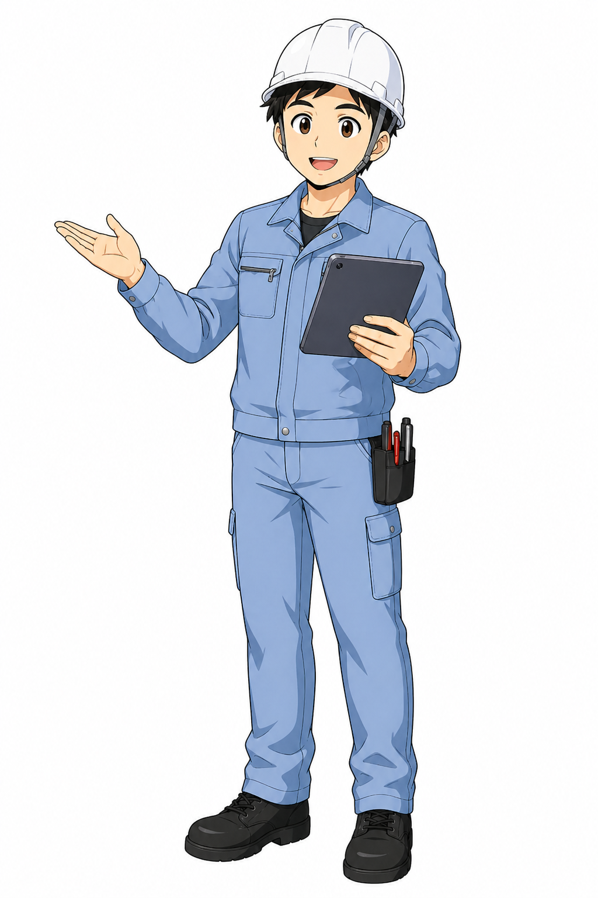
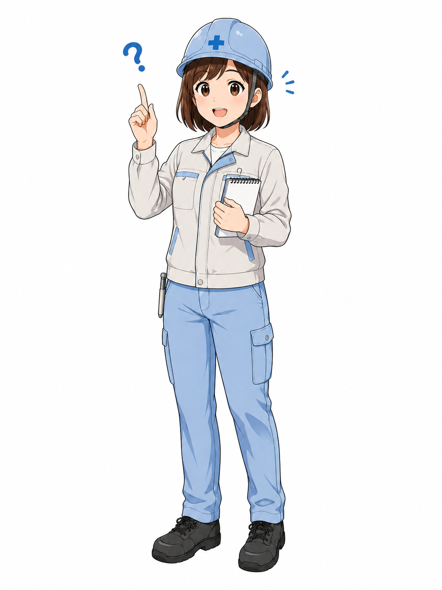
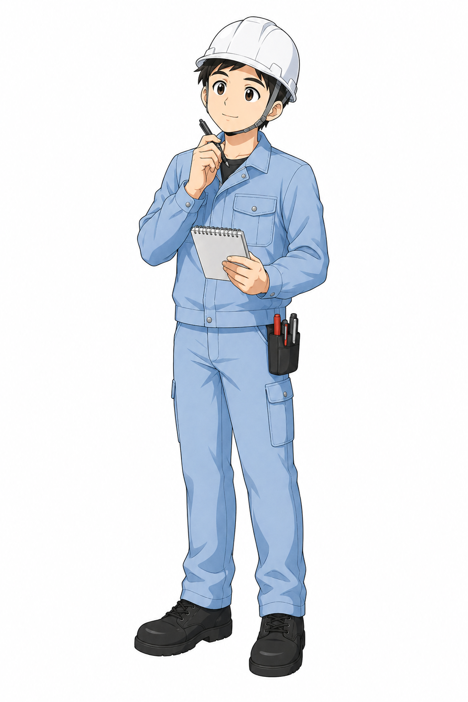
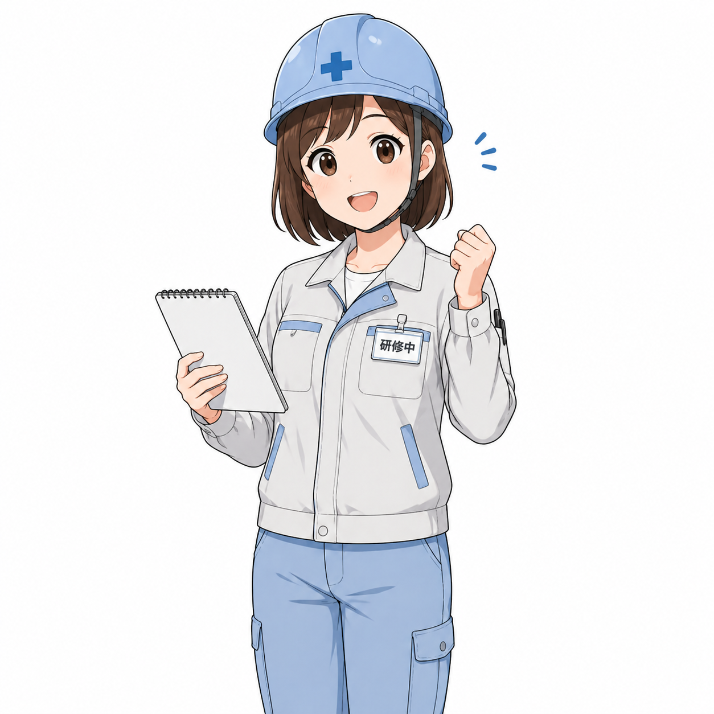

向いている人
- 制御盤の中の部品名を覚えたい人
- モーター制御の入口を知りたい人
- 自己保持回路と部品の関係をつなげたい人
まだ不要な人
まだ入力・出力や接点の考え方があいまいな場合は、先にPLCの入出力やNO/NCの記事から読むと追いやすいです。
先に結論
マグネットスイッチは、小さな制御信号で大きな主回路を入切するための部品と考えると理解しやすいです。
先に結論：マグネットスイッチは「大きな電気を入切する役」
マグネットスイッチは、制御盤の中でモーターなどの負荷を動かすときによく使われる部品です。正式には電磁開閉器と呼ばれることもあります。
イメージとしては、押しボタンやPLC出力が「動け」という指示を出し、マグネットスイッチがその指示を受けて、モーターへ行く主回路を入切する役です。

ボタンやPLCが直接モーターを動かすというより、間にマグネットスイッチを入れて大きな電気を入切するイメージだよ。

つまり、PLCの出力は指示役で、マグネットスイッチが実際に電気を通す役みたいな感じですか？

そう。その考え方ができると、自己保持回路やモーター制御もかなり追いやすくなるよ。
マグネットスイッチとは？
マグネットスイッチは、コイルに電気を流すことで内部の接点を動かす部品です。コイルに電気が流れると電磁石の力が働き、主接点が閉じます。主接点が閉じると、モーターなどの主回路に電気が流れます。
反対に、コイルへの電気が切れると電磁石の力がなくなり、接点が戻ります。これにより主回路が切れ、モーターが止まります。
コイルは「動かすための部分」、主接点は「大きな電気を通す部分」、補助接点は「制御や確認に使う部分」と分けて考えると整理しやすいです。
どんな場所で使う？
- モーターの起動・停止
- ポンプやファンの運転
- コンベアなど設備の駆動
- 制御盤内での主回路の入切
マグネットスイッチの基本の動き
まずは、細かい型式や配線よりも「何が起きると、どこが動くのか」を押さえると理解しやすいです。

基本の流れ
- 押しボタンやPLC出力から「ON」の指示が出る
- マグネットスイッチのコイルに電気が流れる
- 電磁石の力で内部の接点が動く
- 主接点が閉じて、モーターへ電気が流れる
- コイルがOFFになると接点が戻り、モーターが止まる
ここで大事なのは、制御回路と主回路を分けて考えることです。ボタンやPLC出力が扱うのは制御側、モーターに流れる大きな電気は主回路側です。
コイル・主接点・補助接点の違い
マグネットスイッチで初心者が混乱しやすいのが、コイル・主接点・補助接点の違いです。名前は似ていますが、役割はかなり違います。

| 部品 | 役割 | 見るポイント |
|---|---|---|
| コイル | 電気が流れると磁力を発生させ、接点を動かす部分。 | AC100V、AC200V、DC24Vなど、コイル電圧を間違えない。 |
| 主接点 | モーターなどの主回路を入切する部分。 | 負荷容量、接点の焼け、摩耗、異音を確認する。 |
| 補助接点 | 自己保持や信号確認、PLC入力への取り出しなどに使う部分。 | a接点・b接点、使用目的、配線先を確認する。 |

主接点と補助接点って、どちらも接点ですよね？何が違うんですか？

主接点はモーターなど大きな電気を通すところ。補助接点は自己保持や信号確認など、制御側で使うところ。まずはそこを分けて見るといいよ。
PLCと組み合わせるときの考え方
PLCを使う場合でも、PLC出力で大きなモーターを直接動かすとは考えません。基本は、PLC出力でマグネットスイッチのコイルを動かし、主接点でモーター側の電気を入切します。
PLC出力 → マグネットスイッチのコイル → 主接点ON → モーター運転、という流れで見ると理解しやすいです。
PLC側で確認したいこと
- PLC出力の種類と容量
- マグネットスイッチのコイル電圧
- 間にリレーを入れる必要があるか
- サージ対策や保護部品の有無
- PLC入力へ運転確認信号を返す場合の補助接点
現場では、PLC出力から直接コイルを動かしている場合もあれば、間にリレーを入れている場合もあります。設備ごとに考え方が違うので、図面と盤内の配線を照らし合わせて見ることが大切です。
自己保持回路との関係
マグネットスイッチは、自己保持回路とセットで出てくることが多いです。押しボタンを一瞬押しただけでも運転状態を保持したい場合、補助接点を使って自己保持を作ります。
つまり、マグネットスイッチを理解すると、自己保持回路の見え方もかなり変わります。「なぜボタンを離しても動き続けるのか」が、補助接点の働きとして見えてきます。
マグネットスイッチ単体で覚えるより、自己保持回路・停止ボタン・サーマルリレー・補助接点と一緒に見ると、現場の回路に近い理解になります。
現場で見るときの注意点
マグネットスイッチは制御盤の中でよく見る部品ですが、主回路には大きな電気が流れることがあります。確認するときは、必ず安全を優先してください。
制御盤内の確認や交換作業は、電源状態・残留電圧・ロックアウトなどを確認したうえで行います。慣れていない場合は、無理に触らず、分かる人と一緒に確認してください。
確認ポイント
- コイル電圧が合っているか
- 主接点容量が負荷に合っているか
- サーマルリレーが付いているか
- 接点の焼けや変色がないか
- 動作時に異音やチャタリングがないか
- 補助接点が自己保持や信号確認に使われているか
トラブル時は、コイルに電気が来ているのか、接点が動いているのか、サーマルが落ちていないか、補助接点の信号が返っているかなどを順番に見ていきます。
初心者が混乱しやすいポイント
マグネットスイッチとリレーの違い
どちらもコイルと接点を持つ部品ですが、マグネットスイッチはモーターなどの主回路を入切する用途で使われることが多く、リレーは制御信号の切り替えや中継で使われることが多いです。
マグネットスイッチとサーマルリレーの違い
マグネットスイッチは主回路を入切する部品です。サーマルリレーは過負荷を検出して、モーターを保護するための部品です。セットで取り付けられていることが多いので、同じものと勘違いしないようにします。
主回路と制御回路の違い
主回路はモーターなどに電気を送る回路です。制御回路は、押しボタン・PLC・補助接点などで動作を指示する回路です。マグネットスイッチは、この2つをつなぐ役として見ると分かりやすいです。
まとめ：マグネットスイッチはモーター制御の入口になる部品
マグネットスイッチは、制御盤やモーター制御を理解するうえでかなり大事な部品です。
- コイルに電気が流れると接点が動く
- 主接点でモーターなどの主回路を入切する
- 補助接点は自己保持や信号確認に使う
- PLCや押しボタンは、マグネットスイッチを動かす指示役になる
- 自己保持回路と一緒に覚えると理解しやすい

マグネットスイッチって、ただの部品名じゃなくて、制御信号とモーター側の電気をつなぐ役なんですね。
そう。そこが分かると、自己保持回路やモーター回路の図面もかなり読みやすくなるよ。